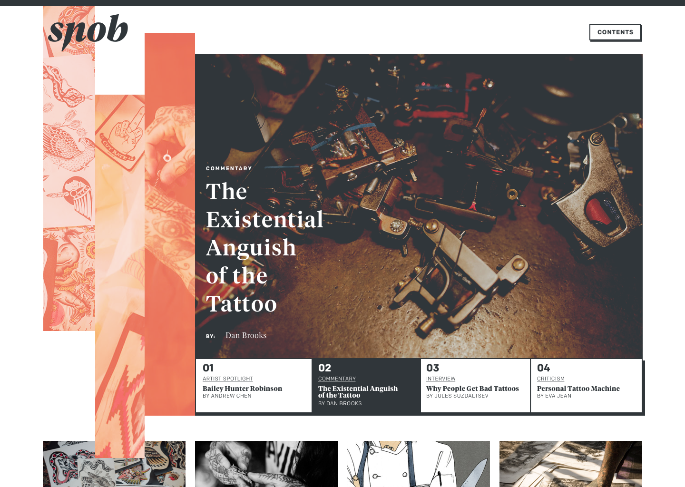

Snob is a quarterly publication that seeks to bring its readers the latest in american traditional tattoo culture and news.
In a departure from mainstream tattoo publications, Snob places an emphasis on storytelling. It seeks to share the inspirations and histories of celebrated artists, while offering commentary on tattooing as an aspect of modern culture.
Its design plays off of the up-and-down motion of a tattoo needle, as well as some of the visual principles of american traditional tattooing. It uses a mixture of photography, illustration, and typographic textures in order to support the stories it tells.


